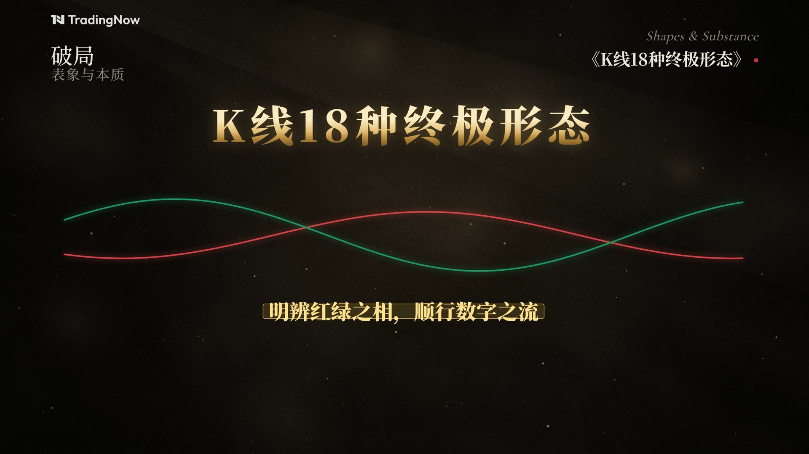

2K 60fps 原片 · 第 1 / 1 步

3840 × 2160 · 60fps得到一个完整的 MP4，可直接上传 YouTube。
点按钮开始下载，全部校验通过后弹出保存窗口。
K线18种终极形态速查｜反转 9 种 + 延续 9 种，一支视频看透多空底层逻辑（2K60）
散户记形态，主力看动能。万变不离其宗，K线核心形态只有 18 种，本质都是主力资金在红绿交锋中的能量留痕。一支视频速查全部 18 种终极形态——趋势反转 9 种（双顶/双底、三重顶/三重底、头肩顶/头肩底、圆弧顶/圆弧底、V形反转）与趋势延续 9 种（上升/下降旗形、上升/下降通道、矩形箱体、对称/上升/下降三角形、扩散喇叭形）。 00:00 散户记形态，主力看动能 00:06 核心形态只有 18 种 00:16 明辨红绿之相，顺行数字之流 00:27 趋势反转形态 · 9 种 00:31 双顶 vs 双底 00:42 三重顶 vs 三重底 00:53 头肩顶 vs 头肩底 01:04 圆弧顶 vs 圆弧底 01:15 V形反转 01:25 趋势延续形态 · 9 种 01:29 上升旗形 01:49 下降旗形 · 上升通道 01:58 下降通道 · 矩形箱体 02:07 对称三角形 · 上升三角形 02:16 下降三角形 · 扩散喇叭形 02:24 18 种形态速查总览 内容仅供学习交流，不构成任何投资建议。市场有风险，投资需谨慎。 #K线形态 #技术分析 #头肩顶 #三角形整理 #TradingNow
把整段发给 Claude，只改最后的「视频标题」「目标时长」「知识点」，就能做出同样风格的视频。
你是 TradingNow 频道的动效导演 + 前端工程师。仓库 chaofan1856/tradingnow 里的 kline-video/ 是我们的
“知识视频引擎”，《K线与动能博弈》就是用它做的。请用同一套引擎，做一支新视频。
## 0. 工作方式（必须遵守）
1. 复制 kline-video/ 为新目录 videos/<英文短名>/（保留 index.html、render.mjs、build.sh、tools/），
只重写 script.js。index.html 是风格引擎，除非为新视觉组件追加 K.xxx 工具函数，否则不要改它的样式常量。
2. 先跑 `node render.mjs --timeline` 看总时长，再用 `node render.mjs --stills 秒,秒,...` 抽 15~20 帧
拼成联系表亲自检查：无文字重叠、无元素出画、无元素压到左上水印/标题栏/右上书名区、字幕区(y≥880)只放字幕。
发现问题就改，直到每一帧都干净，再正式渲染。
3. 正式渲染：`./build.sh`（4K 3840×2160 / 60fps / H.264 High CRF12 tune grain / AAC 384k，分段并行渲染），分段并行 + 缓存；
改了某几个场景只需 `./build.sh --only 场景id,场景id`。
4. 渲染完成后：提交并推送到我指定的分支；把成片做成可下载网页（分片上传，浏览器端合并为原画质 mp4）。
## 1. 视觉风格（固定，不得更改）
- 画布：1920×1080 逻辑坐标 ×2 = 4K 60fps；黑色颗粒底：近黑暖色 + 像素级胶片颗粒 + 石材般低频斑驳 + 稀疏亮颗粒，
中心暖光、40px 金色点阵网格、强暗角；其上常驻缓慢扫动的金色体积光束与漂浮金色散景（bokeh）。
- 全片一层金色微尘粒子（420 颗、三层视差漂浮，转场时带拖尾），贯穿所有场景。
- 左上角水印：频道 Logo 原图 assets/logo.png（不得重绘或改动），位置 (120,34)，高约 31px，透明度 .88，全片常驻（片尾 Logo 页除外）。
- 左上标题栏：“模块”+ 金色渐变大数字，下方灰色小字副标题；右上：英文斜体小字 + 《中文书名式标题》+ 红色小方块。
同一模块内标题栏保持不动，跨模块时旧的上移淡出、新的下移落位。
- 字体：思源宋体 Noto Serif SC（500/700/900）为主；英文用 Cormorant Garamond；logo 字用 Inter Display SemiBold。
- 色彩语义（中国市场）：红 #E5484D = 多头/上涨/阳线；绿 #1FA36A = 空头/下跌/阴线；
金 #C9A25A / 高光金 #F1D597 = 重点、标注、点阵线；正文暖白 #ECE6D9；次要灰 #8C8578。
- 全部文字按 1.75 倍放大（引擎 FS），保证手机一眼可读；字幕左对齐 x=160，第一行基线 y=880，两行时向下排，宋体 700 48×1.75px（深色描边），逐字上浮淡入；英文单词不拆行；标记语法
{金色重点} [红色/多头] <绿色/空头>，每行不超过 ~34 字。
- 标注风格：金色虚线引线、金色圆环标记（可脉冲）、括号 bracket / 竖括号 vbrace、描边小标签 tag、
点阵曲线 dotted（参考风格里的“粒子线”）、底部金色刻度基线 baseline。
- 章节卡：MODULE · 0N 字距小字 → 壹/贰/叁 金色渐变大字（缓慢缩放呼吸）→ 中心生长的金线+亮点 →
章节标题自遮罩中升起 → 英文大写字距 → 灰色副标题。
- 片头：冷开场（金色价格点阵流入并凝聚成K线）→ 标题卡（金色渐变大标题 + 英文小字 + 扫光 + 金线）。
- 片尾：要点回顾（壹贰叁三行）→ TradingNow logo 页 + 视频标题（不加“完”） + 风险提示
“内容仅供学习交流，不构成任何投资建议。市场有风险，投资需谨慎。”
## 2. 动效规范（Motion）
- 绝不硬切、绝不黑场：场景之间重叠 1.1s，用转场合成：
'zoom'(穿越推进，默认) / ['push',1](视差横推，同模块内连续讲解) / 'sweep'(金光斜扫，进入章节卡)
/ ['iris',[x,y]](金环圆形展开，进入新篇章正文) / 'dissolve'(总结段)。
- 每个场景都有缓慢镜头运动 camera {z0,z1,x0,x1,y0,y1}（推近 3%~8%、平移 ≤60px），画面永不静止。
- 元素出场：easeOut / expo / 回弹 easeBack；K线逐根生长（实体先长、影线后伸）；
线条按进度绘制；标签延迟 0.2~0.4s 跟随；同屏同时运动的主体 ≤3 个。
- 视觉节拍与字幕绑定：S.at(行号, 延迟, 时长) —— 讲到哪句，画面就动到哪。
- 一切都是帧号的纯函数（不用 Math.random / Date），seed 固定的 K.rng / K.gen 生成数据。
## 3. 声音
- 配乐由 tools/score.py 原创合成并按时间线自动对齐：D 小调弦乐铺底 + 钢琴分解和弦 + 心跳低频脉冲
（越到后段越紧）+ 章节卡上的上升音效/低频重击/闪光音 + 每次转场的轻微 whoosh。
- 不使用任何第三方音乐或音效素材（避免 YouTube Content ID）。
## 4. 节奏与时长
- 每行字幕时长 = max(2.2s, 字数×0.13 + 0.95)s；场景前留 0.7s，后留 0.6s。
- 结构：冷开场(~6s) → 标题(5s) → 导言 → [章节卡(4.2s) → 若干知识场景] × N → 回顾 → 片尾(5.5s)。
- 总时长控制在【目标时长】以内；超了就精简字幕措辞（不删知识点）或调 FILM.timing。
## 5. script.js 写法
window.FILM = { title, transition: 1.1, subtitle:{x:220,y:912,size:42,maxW:1480}, scenes:[ ... ] }
场景对象：{ id, header?, lines?, visual(ctx,S,K), tr?, camera?, dur?, subY?, noWatermark? }
可用工具（index.html 中的 K）：
K.text / K.goldText / K.rich / K.candle / new K.Chart(candles,box,{lo,hi,body}).draw(ctx,reveal,{dim,glow,color})
K.gen.path(价格拐点数组,{per,noise,wick,seed}) → {candles,swings} ；K.gen.seq(起点,[[实体,上影,下影],...])
K.dotted / K.dash / K.line / K.rule / K.arrow / K.marker / K.bracket / K.vbrace / K.tag / K.baseline / K.watermark
K.C 色板，K.F 字体，K.clamp/lerp/easeOut/easeInOut/expo/rng/rgba/mix
标准图表区 BOX = {x:260,y:250,w:1400,h:500}（字幕区以上，左右留白避开标题栏）。
每个知识点都要有专门设计的可视化（K线图、示意动画、对比面板、流程、数轴……），
不能只有字幕；需要新图形时在 script.js 内用 ctx + K 自行绘制，保持同一套线宽、发光和配色。
## 6. 交付清单
1) videos/<短名>/成片/<标题>_4K60.mp4（3840×2160 60fps，<目标时长>）
2) 15~20 帧联系表自检通过
3) 提交 + 推送
4) 下载网页（原画质，分片合并）链接
5) 一段 YouTube 标题/简介/标签建议
==================== 只需要改下面两处 ====================
【视频标题】：（例：成交量与价格的共振）
【目标时长】：（例：5 分钟以内）
【知识点】：
（把你的讲稿/知识点原文粘贴在这里，可以带 📌 🧱 📈 ⚡ 等小标题和分层要点。
Claude 会自动：拆成导言 + 若干模块；每个模块一张章节卡；每个要点一个可视化场景；
把关键名词标成金色、多头相关标红、空头相关标绿。）